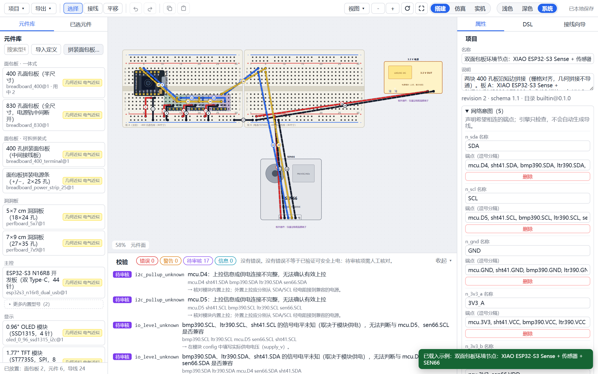
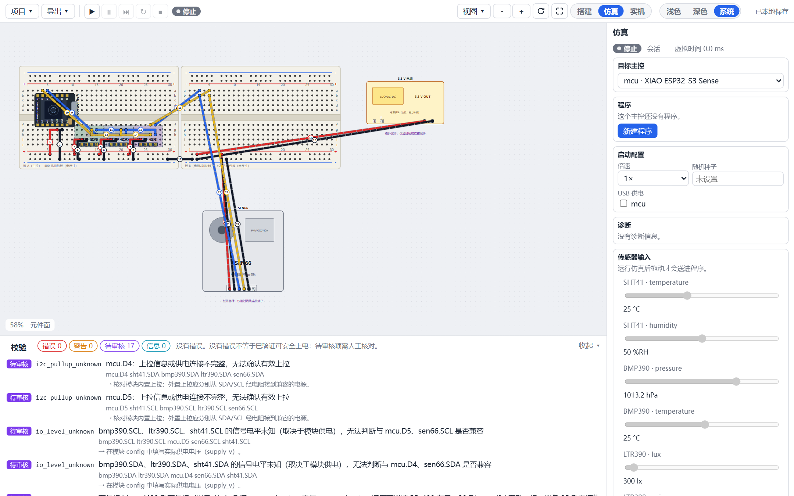
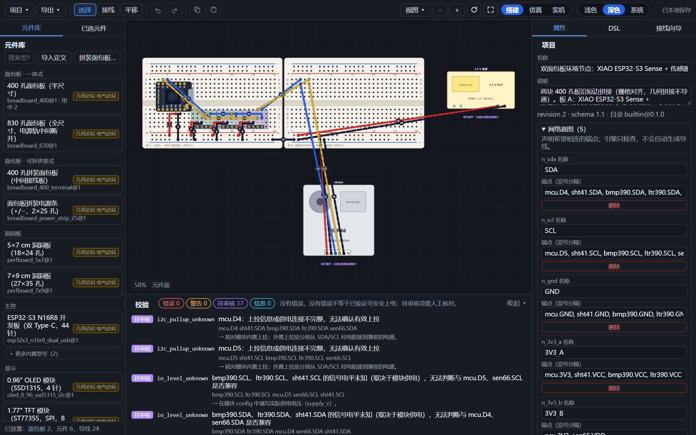
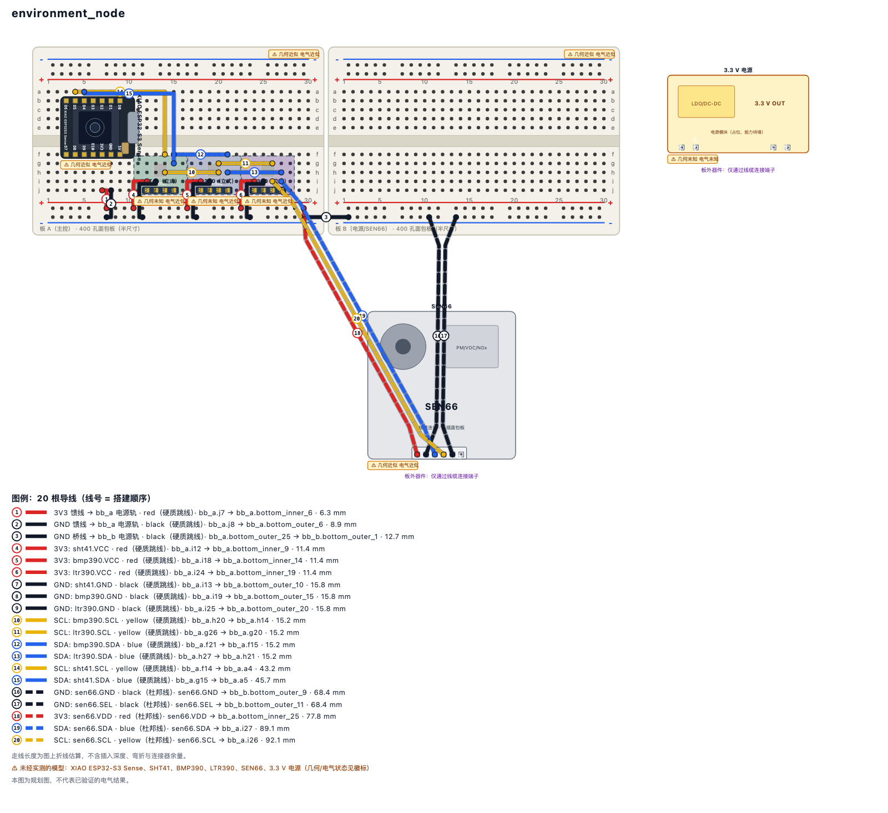
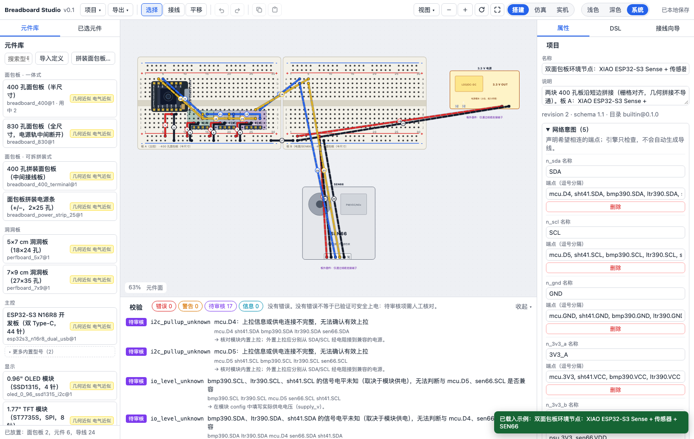

01
选板、拼板、改尺寸
400 / 830 孔面包板、可拆拼装式、洞洞板。拖把手就能延长或裁剪行列；拼接时按 2.54 mm 栅格对齐。
400 / 830 孔面包板、可拆拼装式、洞洞板。拖把手就能延长或裁剪行列；拼接时按 2.54 mm 栅格对齐。
主控、显示、传感器、输入、电源都有带引脚角色与证据状态的定义。搜索支持中文别名与料号。
拖线、改端点、换颜色。多选后自动规划电源 / 地 / I²C / GPIO，会报告走线长度与待审核项。
短路、浮空输入、I²C 地址冲突、未上电、保留引脚……点击结果就能定位到画布上的对象。
QuickJS + 虚拟时钟：GPIO、I²C、传感器驱动、串口、网络时间线与断点。同样输入可录制回放。
SVG / PNG 含图例与徽标；JSON / DSL 可往返；接线步骤可给搭板的人照着做。实机模式可看串口（不烧录）。





# 校验一份设计（error 时退出码 1） pnpm bb validate design.breadboard.json --json # 自动排线，先 dry-run 再写回 pnpm bb autowire design.breadboard.json \ --host mcu --components sht41,bmp390 \ --dry-run --json # 把同一引擎挂成 MCP 工具 node packages/cli/bin/bb.mjs mcp
宣传站也该像目录一样说实话——这是仓库的一贯约定：